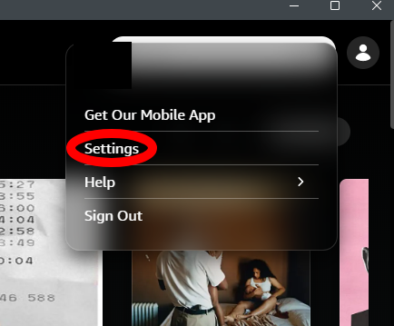
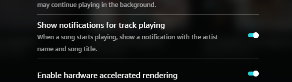

Fallback Metadata
Enable Amazon Music Notifications
Notification fallback reads Amazon Music's Windows notification text locally when enhanced metadata is unavailable.
Note: Amazon Music usually sends track notifications only when the app is minimized or not in focus. Keep it minimized for best fallback results.
1
Open Amazon Music Settings
In the Amazon Music app, click your profile icon in the top-right corner, then select Settings.

2
Enable Track Notifications
Scroll until you see "Show notifications for track playing" and make sure the toggle is enabled.

When this matters
You do not need notification fallback when enhanced metadata is working. It is only a backup path for fallback mode.